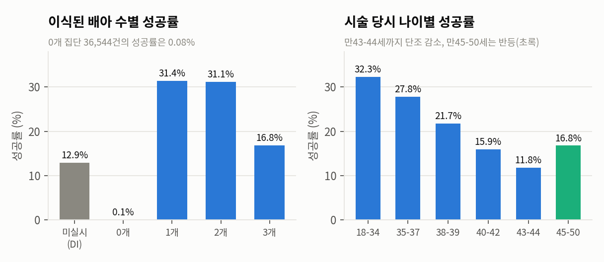
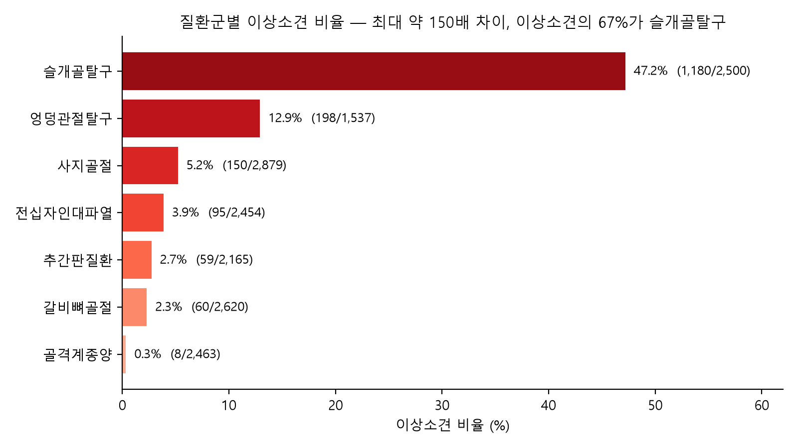
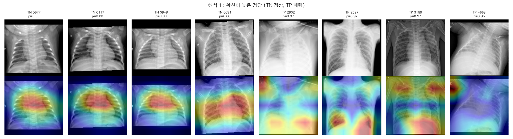

임신 성공 여부 예측
난임 시술 기록 25만 건으로 임신 성공을 예측하는 앙상블 모델(AUC 0.7417). '이식 배아 수' 한 변수가 중요도의 50%를 차지한다는 한계를 찾아 보고했습니다.
자세히 보기
Jeon Eunji
데이터의 가치를 비즈니스 함의로 연결하고, 테크 기반의 논리적 소통을 지향합니다.
01 / Projects
헬스케어 데이터로 문제를 정의하고, 분석 결과를 서비스와 비즈니스 판단으로 연결했습니다.

난임 시술 기록 25만 건으로 임신 성공을 예측하는 앙상블 모델(AUC 0.7417). '이식 배아 수' 한 변수가 중요도의 50%를 차지한다는 한계를 찾아 보고했습니다.
자세히 보기

X-ray·혈액검사·처방을 묶은 구독형 동물병원 판독 보조 서비스 기획. 528개 요인을 특성요인도로 정리하고, X-ray 라벨 16,618장으로 서비스 필요성을 검증했습니다.
자세히 보기

소아 흉부 X-ray를 정상/폐렴으로 분류해 리더보드 정확도 0.8782(Baseline 0.75)를 달성. Grad-CAM으로 모델이 폐 바깥 단서에 의존하는 경향을 찾아냈습니다.
자세히 보기
02 / Activity
2026.10 — 현재 진행 중
자격 취득을 목표로 스터디에 참가하여, 한국자격검정평가진흥원 파이썬전문가 1급을 취득했습니다.
2026.10
문제 정의부터 모델 학습, Grad-CAM 분석, 최종 보고서까지 전 과정을 혼자 수행했습니다.
2026.09 — 10
특성요인도·변수정의서·분석계획서를 설계하고, 최종 발표 1부(추진배경·서비스 제안)를 맡았습니다.
2026.08 — 09
LightGBM 모델링과 튜닝, 재현성 문제 해결, 모델 개발 보고서 작성을 맡았습니다.
2026.07 — 현재 진행 중
Python, 통계, 데이터베이스, 머신러닝·딥러닝, 컴퓨터 비전·자연어 처리, Git, HTML/CSS & JavaScript, FastAPI, Docker를 학습하고 팀 프로젝트를 수행하고 있습니다.
03 / Tech Stack
04 / Contact
메일, GitHub, 블로그 어디로든 연락할 수 있습니다.